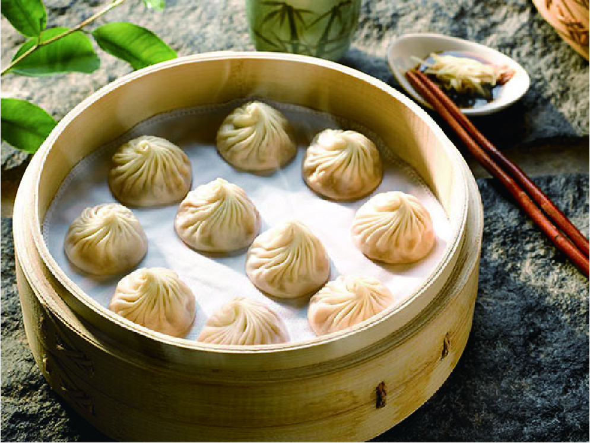

}
홈 > 식당정보
IN THE VICINITY of HOTEL
호텔 주변에 가장 인기있는 맛집
BLACK TAP CRAFT BURGERS & BEER
뉴욕 레스토랑의 첫 번째 아시아 지점에서 두툼한
고메 햄버거, 풍성하게 쌓아 올린 밀크셰이크,
생맥주와 칵테일을 맘껏 맛보세요.
Black Tap(블랙 탭)은 근사하면서 여유로운 옛
정취를 지닌 미국 식당의 분위기를 고스란히
되살리고 있습니다.
다양한 종류의 수제 햄버거를 메뉴로 선보입니다.

Din Tai Fung(딘타이펑)
The New York Times 선정 세계 10대 레스토랑
중 하나로 선정된 레스토랑에서 세계적 명성의
돼지고기 덤플링을 맛보세요.
이 대만 레스토랑은 또한 새우와 달걀을 넣은
볶음밥(Fried Rice with Shrimp and Eggs),
찐 닭고기 수프(Steamed Chicken Soup),
등 유명 요리를 선보입니다.
고든 램지의 Bread Street Kitchen
워터프론트를 바라보는 활기찬 공간에서
피시 앤 칩스(Fish & Chips), 비프 웰링턴
(Beef Wellington), 스코치 에그(Scotch Egg),
클래식 로스트와 같은 영국식 전통 요리를 편안
하게 즐겨보세요.
빈티지하면서 모던한 감각이 결합된 이곳의
분위기는 숨겨진 스피커에서 나오는
음악으로 더욱 고조됩니다.